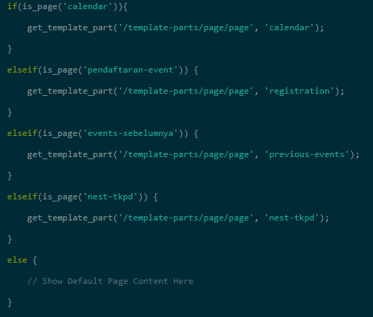
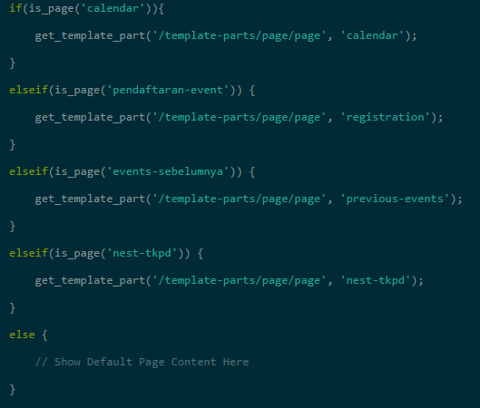

How to Keep It Minimal
Conditional Tags is your friend. We put all our modules in template-parts hence the usage of conditional tags in the primary template file such as page.php
E.g
Conditional Tags is your friend. We put all our modules in template-parts hence the usage of conditional tags in the primary template file such as page.php
E.g
